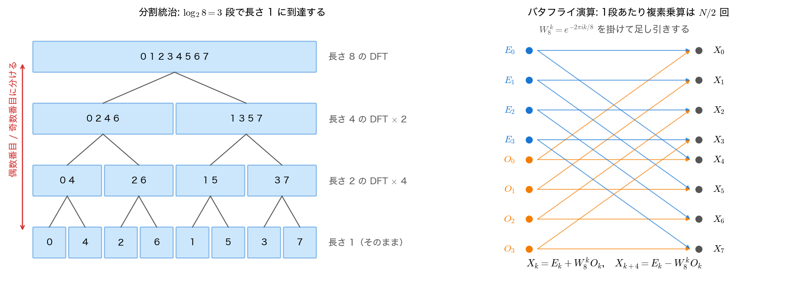
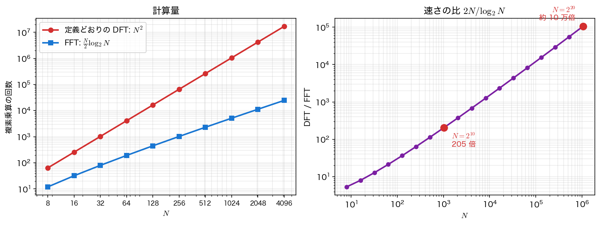

離散フーリエ変換と FFT
連続なフーリエ変換は積分で定義されるが、計算機が扱えるのは有限個の標本点だけである。そこで、\(N\) 点の数列 \(u_0,\dots,u_{N-1}\) を \(N\) 個の三角関数の重ね合わせとして表す離散フーリエ変換を出発点にする。
このページでは、定義どおりに計算すると \(N^2\) 回の複素乗算が必要なこと、そして「偶数番目と奇数番目に分ける」という一手で \(\frac{N}{2}\log_2N\) 回に落ちることを見る。\(N=10^6\) で 10 万倍の差になるこの改善が、次ページ以降のスペクトル法を実用にしている。
離散フーリエ変換の定義
格子点 \(x_j=2\pi j/N\)（\(j=0,\dots,N-1\)）上の値 \(u_j\) に対し、
を離散フーリエ変換（DFT）と呼ぶ。\(W_N\) は回転因子（twiddle factor）と呼ばれ、複素平面の単位円を \(N\) 等分する点である（\(W_N^N=1\)）。
これは要するに行列とベクトルの積である。\(N=4\) なら
\(N\times N\) の行列と \(N\) 次元ベクトルの積だから、複素乗算は \(N^2\) 回、複素加算も同程度である。\(N=10^6\) なら \(10^{12}\) 回——1コアで毎秒 \(10^9\) 回の複素乗算ができるとしても 17 分かかる。これでは使えない。
逆変換は、\(W_N\) の直交性
からただちに
と書ける。指数の符号を変えて \(1/N\) を掛けるだけなので、順変換のプログラムに符号の引数を1つ足せば逆変換にもなる。以降のコードで sign 引数を持たせているのはこのためである。
なぜ \([0,2\pi)\) で片端だけを格子に含めるのか
周期関数では \(u(2\pi)=u(0)\) なので、\(x=2\pi\) を格子に入れると同じ情報を二重に持つことになり、行列が正則でなくなる。\(N\) 点で \(N\) 個の係数 \(\hat u_k\) を決める——この過不足のない対応が DFT の要である。第9回〜第12回で \([0,1]\) の両端を格子に含めたのは、そこでの境界条件がディリクレ条件（値の指定）だったからで、周期境界とは事情が異なる。
偶数番目と奇数番目に分ける
\(N\) が偶数のとき、和を \(j\) の偶奇で2つに分ける。\(j=2l\) と \(j=2l+1\)（\(l=0,\dots,m-1\)、\(m=N/2\)）と置くと
ここで決定的な事実が使える。
つまり \(E_k\) と \(O_k\) は、それぞれ長さ \(m=N/2\) の DFT そのものである（\(E\) は偶数番目の点だけを、\(O\) は奇数番目の点だけを標本にした DFT）。したがって
が \(k=0,\dots,N-1\) に対して成り立つ。ところが \(E_k\) と \(O_k\) は長さ \(m\) の DFT なので \(k\) について周期 \(m\) しか持たない。\(k\ge m\) の部分は \(E_{k}=E_{k-m}\)、\(O_k=O_{k-m}\) で読み替えられ、さらに
——回転因子はちょうど符号が反転する。まとめると、\(k=0,\dots,m-1\) に対して
\(W_N^{\,k}O_k\) を1回だけ計算して足し引きすれば、2つの出力が同時に得られる。この形が蝶の羽に似ていることからバタフライ演算（butterfly operation）と呼ばれる。

長さ \(N\) の DFT が「長さ \(N/2\) の DFT 2回 ＋ \(N/2\) 回の複素乗算」に化けた。同じことを \(N/2\) に対しても繰り返せば、長さ \(N/4\) の DFT 4回になる。\(N=2^p\) なら \(p=\log_2N\) 回の分割で長さ 1 に到達し、長さ 1 の DFT は何もしない（\(\hat u_0=u_0\)）。これがクーリー＝テューキー法である。
計算量: \(O(N^2)\) から \(O(N\log N)\) へ
複素乗算の回数 \(T(N)\) は漸化式
を満たす。両辺を \(N\) で割って \(S(N)=T(N)/N\) と置くと \(S(N)=S(N/2)+\tfrac12\) となり、\(\log_2N\) 段ぶん \(\tfrac12\) ずつ増えるので
を得る。素朴な DFT の \(N^2\) に対する比は
で、\(N\) とともに増え続ける。

| \(N\) | DFT: \(N^2\) | FFT: \(\frac{N}{2}\log_2N\) | 比 |
|---|---|---|---|
| \(8\) | 64 | 12 | 5.3 |
| \(64\) | 4096 | 192 | 21.3 |
| \(512\) | 262144 | 2304 | 113.8 |
| \(4096\) | 16777216 | 24576 | 682.7 |
| \(2^{20}\approx10^6\) | \(1.1\times10^{12}\) | \(1.05\times10^7\) | 約 \(10^5\) |
先ほど「17 分かかる」と書いた \(N=10^6\) の変換は、FFT なら \(10^7\) 回の乗算——0.01 秒で終わる。
アルゴリズムの改良は、計算機の高速化より効く
\(N=2^{20}\) での 10 万倍は、計算機の速度が 10 万倍になったのと同じ効果である。ムーアの法則で計算機が 10 万倍速くなるには 25 年かかった。FFT は 1965 年の論文1本でそれを実現した（実はガウスが 1805 年に同等の手法を書き残していたことが後に判明している）。第3回で見た「\(O(n^3)\) のガウス消去 → 1反復 \(O(n)\) の共役勾配法」も同じ構図である（2次元ポアソン方程式なら反復回数が \(O(\sqrt n)\) なので総計算量は \(O(n^{1.5})\) ——第10回の計算量の表を参照）。計算量のオーダーを下げることが数値解析の中心的な仕事である理由がここにある。
実装上の注意
本講義のコードは、理解しやすさを優先して再帰で書く。実用の実装との違いを挙げておく。
- \(N\) は 2 のべきに限る。 上の分割は \(N\) が偶数であることを繰り返し使う。基数 2（radix-2）の実装では \(N=2^p\) が必須である。実用のライブラリは \(N=2^a3^b5^c7^d\) などの混合基数（mixed radix）に対応し、それでも駄目なら別のアルゴリズム（Bluestein 法）に切り替えるので、任意の \(N\) で \(O(N\log N)\) が保てる。
- 作業配列を毎回確保しない。 再帰のたびに
mallocすると、それだけで実行時間の大半を食う。実用の実装は入力をビット反転順（bit-reversal）に並べ替えてから、その場（in-place）で \(\log_2N\) 段のループを回す。 - 回転因子は事前に表にする。
cos・sinの呼び出しは複素乗算よりずっと高価である。\(W_N^{\,k}\)（\(k=0,\dots,N/2-1\)）を一度計算して配列に持てば、以後は表引きで済む。 - 実数入力なら計算量は半分になる。 \(u_j\) が実数なら \(\hat u_{N-k}=\overline{\hat u_k}\) なので、独立な係数は約半分しかない。実数専用の変換（r2c）はこれを利用して約2倍速い。
演習1でこの再帰版の実行時間を実測すると、\(N=8192\) で理論比 1260 に対して実測は 680 倍程度にとどまる。差は上の1つ目・2つ目の事情によるものである。それでも 680 倍なので、素朴な実装でも FFT を使う価値は十分にある。
実務では FFTW を使う
自分で書けることと、自分で書いたものを使うことは別である。実務では FFTW（Fastest Fourier Transform in the West, MIT 開発、GPL）が事実上の標準になっている。任意の \(N\)、多次元、実数専用変換、マルチスレッドに対応し、実行環境に合わせてアルゴリズムを自動選択する（これが「プラン」の正体である）。
導入は環境ごとに次のようにする。
FFTW の公式サイトからプリコンパイル済み DLL を入手し、fftw3.h をインクルードパスに、libfftw3-3.lib をリンカの入力に追加する（または vcpkg で vcpkg install fftw3 とする）。
使い方は「プランを作る → 実行する → 破棄する」の3段構えである。
#include <stdio.h>
#include <math.h>
#include <fftw3.h>
/* FFTW による長さ N の複素 DFT。
fftw_complex は double[2] で、[0] が実部、[1] が虚部である。
プランの作成は入力配列を壊すことがあるので、データを詰めるのは
プランを作った後にする。 */
int main(void)
{
const int n = 8;
const double PI = 3.14159265358979323846;
fftw_complex *in = (fftw_complex *)fftw_malloc(sizeof(fftw_complex)*n);
fftw_complex *out = (fftw_complex *)fftw_malloc(sizeof(fftw_complex)*n);
/* FFTW_FORWARD が exp(-2 pi i jk/n)、本講義の sign = -1 と同じ向き。
FFTW_ESTIMATE は「測定せずに素早くプランを決める」指定。
同じプランを何度も使うなら FFTW_MEASURE のほうが速くなる。 */
fftw_plan plan = fftw_plan_dft_1d(n, in, out, FFTW_FORWARD, FFTW_ESTIMATE);
for (int j = 0; j < n; j++) {
in[j][0] = 3.0 + 2.0*cos(2.0*PI*j/n) - sin(2.0*PI*3.0*j/n);
in[j][1] = 0.0;
}
fftw_execute(plan); /* 何度でも呼べる */
for (int k = 0; k < n; k++)
printf(" %d %9.4f %+9.4fi\n", k, out[k][0], out[k][1]);
fftw_destroy_plan(plan);
fftw_free(in); fftw_free(out);
fftw_cleanup();
return 0;
}
コンパイル・実行:
出力は本ページのサンプルコード (1) の X_k と一致する。
この FFTW の例は本資料の環境では実行していない
本資料に載せている他の C コードはすべて実際にコンパイル・実行して出力を転記しているが、この節のコードだけは FFTW が導入された環境が必要なため未実行である。手元で試す場合は上記の手順でライブラリを入れること。なお逆変換 FFTW_BACKWARD は \(1/N\) を掛けない（本講義の fft(..., +1) と同じ規約）ので、往復させたら自分で \(N\) で割る必要がある。
使うライブラリを選ぶときの観点
FFTW は GPL なので、商用の閉じたソフトウェアに組み込むには別途ライセンスが必要になる。代替として Intel MKL の DFTI（Intel CPU で高速）、Apple の vDSP（macOS/iOS）、NVIDIA の cuFFT（GPU）、軽量な単一ヘッダ実装（PocketFFT、KISS FFT）などがある。インターフェースはどれも「プランを作って実行する」形に似ているので、1つ覚えれば移行は難しくない。
サンプルコード
定義どおりの DFT と再帰版 FFT を両方実装し、(1) 結果が一致すること、(2) 複素乗算の回数が理論値どおりであること、(3) 逆変換で元に戻ることを確認する。複素数は処理系による差を避けるため構造体で自前に定義する。
#include <stdio.h>
#include <stdlib.h>
#include <math.h>
/* 第13回 離散フーリエ変換（DFT）と高速フーリエ変換（FFT）
定義どおりの DFT は二重ループで N^2 回の複素乗算を要する。
クーリー＝テューキー法は「偶数番目と奇数番目に分けて長さ N/2 の DFT を2回」
という分割統治で (N/2) log2(N) 回に減らす。
複素数は <complex.h> の対応が処理系でまちまちなので、構造体で自前に定義する。
nmul で複素乗算の回数を数え、理論値と突き合わせる。 */
static const double PI = 3.14159265358979323846;
typedef struct { double re, im; } cplx;
static long nmul = 0; /* 複素乗算の回数 */
static cplx cset(double re, double im) { cplx z; z.re = re; z.im = im; return z; }
static cplx cadd(cplx a, cplx b) { return cset(a.re + b.re, a.im + b.im); }
static cplx csub(cplx a, cplx b) { return cset(a.re - b.re, a.im - b.im); }
static cplx cmul(cplx a, cplx b)
{
nmul++;
return cset(a.re*b.re - a.im*b.im, a.re*b.im + a.im*b.re);
}
/* 定義どおりの DFT。sign = -1 が順変換、+1 が逆変換（1/n は付けない） */
static void dft(const cplx *x, cplx *X, int n, int sign)
{
for (int k = 0; k < n; k++) {
cplx s = cset(0.0, 0.0);
for (int j = 0; j < n; j++) {
double th = sign*2.0*PI*k*j/n;
s = cadd(s, cmul(cset(cos(th), sin(th)), x[j]));
}
X[k] = s;
}
}
/* クーリー＝テューキー法（基数2・再帰）。n は2のべきであること。
x を上書きする。sign = -1 が順変換、+1 が逆変換（1/n は付けない） */
static void fft(cplx *x, int n, int sign)
{
if (n == 1) return;
int m = n/2;
cplx *e = malloc(m*sizeof(cplx));
cplx *o = malloc(m*sizeof(cplx));
for (int i = 0; i < m; i++) { e[i] = x[2*i]; o[i] = x[2*i+1]; }
fft(e, m, sign);
fft(o, m, sign);
for (int k = 0; k < m; k++) { /* バタフライ演算 */
double th = sign*2.0*PI*k/n;
cplx t = cmul(cset(cos(th), sin(th)), o[k]);
x[k] = cadd(e[k], t);
x[k+m] = csub(e[k], t);
}
free(e); free(o);
}
/* 再現可能な擬似乱数（xorshift64）。[0,1) を返す */
static unsigned long long rs = 88172645463325252ULL;
static double rnd(void)
{
rs ^= rs << 13; rs ^= rs >> 7; rs ^= rs << 17;
return (double)(rs >> 11)*(1.0/9007199254740992.0);
}
int main(void)
{
printf("=== 離散フーリエ変換と高速フーリエ変換 ===\n\n");
/* --- (1) 小さな例で定義どおりの DFT と FFT が一致することを見る --- */
int n = 8;
cplx *x = malloc(n*sizeof(cplx)), *X = malloc(n*sizeof(cplx)), *Y = malloc(n*sizeof(cplx));
printf("--- (1) N = %d の具体例 ---\n", n);
printf(" x_j = 3 + 2 cos(2 pi j/N) - sin(2 pi * 3 j/N)\n\n");
for (int j = 0; j < n; j++) {
double v = 3.0 + 2.0*cos(2.0*PI*j/n) - sin(2.0*PI*3.0*j/n);
x[j] = cset(v, 0.0);
Y[j] = x[j];
}
dft(x, X, n, -1);
fft(Y, n, -1);
printf(" k x_k DFT の X_k FFT の X_k 差\n");
double dmax = 0.0;
for (int k = 0; k < n; k++) {
double d = fabs(X[k].re - Y[k].re) + fabs(X[k].im - Y[k].im);
if (d > dmax) dmax = d;
printf(" %d %9.5f %9.4f %+9.4fi %9.4f %+9.4fi %8.1e\n",
k, x[k].re, X[k].re, X[k].im, Y[k].re, Y[k].im, d);
}
printf("\n 最大差 %.3e（丸め誤差の範囲で一致）\n", dmax);
printf(" 定数項 3 は k=0 に 3N=%.0f、cos は k=1 と k=N-1 に、sin は k=3 と k=N-3 に現れる。\n", 3.0*n);
printf(" 実数信号なので X_{N-k} は X_k の複素共役になっている。\n");
free(x); free(X); free(Y);
/* --- (2) 複素乗算の回数 --- */
printf("\n--- (2) 複素乗算の回数（実測とその理論値）---\n");
printf(" N DFT 実測 N^2 FFT 実測 (N/2)log2(N) 比\n");
FILE *fc = fopen("fft_cost.dat", "w"); /* 作図用 */
fprintf(fc, "# N mul_dft N^2 mul_fft (N/2)log2N ratio\n");
for (int m = 3; m <= 12; m++) {
int N = 1 << m;
cplx *a = malloc(N*sizeof(cplx)), *A = malloc(N*sizeof(cplx));
for (int j = 0; j < N; j++) a[j] = cset(rnd(), 0.0);
nmul = 0;
dft(a, A, N, -1);
long cd = nmul;
for (int j = 0; j < N; j++) A[j] = a[j];
nmul = 0;
fft(A, N, -1);
long cf = nmul;
printf(" %5d %10ld %10.0f %10ld %10.0f %8.1f\n",
N, cd, (double)N*N, cf, 0.5*N*m, cd/(double)cf);
fprintf(fc, "%d %ld %.0f %ld %.0f %.10e\n",
N, cd, (double)N*N, cf, 0.5*N*m, cd/(double)cf);
free(a); free(A);
}
fclose(fc);
printf(" 実測は理論値と完全に一致する。比は 2N/log2(N) で、N とともに増え続ける。\n");
printf(" N = 2^20 = 1048576 なら DFT は 1.1e+12 回、FFT は 1.05e+07 回で、比は約 10 万倍。\n");
/* --- (3) 逆変換で元に戻るか --- */
printf("\n--- (3) 順変換 → 逆変換の往復誤差 ---\n");
printf(" N 最大誤差\n");
for (int m = 6; m <= 14; m += 2) {
int N = 1 << m;
cplx *a = malloc(N*sizeof(cplx)), *b = malloc(N*sizeof(cplx));
for (int j = 0; j < N; j++) { a[j] = cset(2.0*rnd() - 1.0, 0.0); b[j] = a[j]; }
fft(b, N, -1);
fft(b, N, +1);
double e = 0.0;
for (int j = 0; j < N; j++) {
double d = fabs(b[j].re/N - a[j].re);
if (d > e) e = d;
}
printf(" %5d %10.3e\n", N, e);
free(a); free(b);
}
printf(" 逆変換は指数の符号を変えて 1/N を掛けるだけ。誤差は丸め誤差の水準にとどまる。\n");
return 0;
}
コンパイル・実行:
実行結果
=== 離散フーリエ変換と高速フーリエ変換 ===
--- (1) N = 8 の具体例 ---
x_j = 3 + 2 cos(2 pi j/N) - sin(2 pi * 3 j/N)
k x_k DFT の X_k FFT の X_k 差
0 5.00000 24.0000 +0.0000i 24.0000 +0.0000i 0.0e+00
1 3.70711 8.0000 +0.0000i 8.0000 +0.0000i 2.2e-15
2 4.00000 -0.0000 -0.0000i -0.0000 +0.0000i 3.1e-15
3 0.87868 0.0000 +4.0000i 0.0000 +4.0000i 4.0e-15
4 1.00000 -0.0000 -0.0000i 0.0000 +0.0000i 6.3e-15
5 2.29289 0.0000 -4.0000i 0.0000 -4.0000i 9.3e-15
6 2.00000 -0.0000 -0.0000i 0.0000 -0.0000i 1.1e-14
7 5.12132 8.0000 +0.0000i 8.0000 +0.0000i 2.6e-14
最大差 2.554e-14（丸め誤差の範囲で一致）
定数項 3 は k=0 に 3N=24、cos は k=1 と k=N-1 に、sin は k=3 と k=N-3 に現れる。
実数信号なので X_{N-k} は X_k の複素共役になっている。
--- (2) 複素乗算の回数（実測とその理論値）---
N DFT 実測 N^2 FFT 実測 (N/2)log2(N) 比
8 64 64 12 12 5.3
16 256 256 32 32 8.0
32 1024 1024 80 80 12.8
64 4096 4096 192 192 21.3
128 16384 16384 448 448 36.6
256 65536 65536 1024 1024 64.0
512 262144 262144 2304 2304 113.8
1024 1048576 1048576 5120 5120 204.8
2048 4194304 4194304 11264 11264 372.4
4096 16777216 16777216 24576 24576 682.7
実測は理論値と完全に一致する。比は 2N/log2(N) で、N とともに増え続ける。
N = 2^20 = 1048576 なら DFT は 1.1e+12 回、FFT は 1.05e+07 回で、比は約 10 万倍。
--- (3) 順変換 → 逆変換の往復誤差 ---
N 最大誤差
64 2.220e-16
256 3.886e-16
1024 4.718e-16
4096 7.494e-16
16384 9.992e-16
逆変換は指数の符号を変えて 1/N を掛けるだけ。誤差は丸め誤差の水準にとどまる。
読み取るべき点が4つある。
- 入力の三角関数が、そのまま特定の \(k\) に現れている。 \(x_j=3+2\cos(2\pi j/N)-\sin(2\pi\cdot3j/N)\) に対し、定数項 \(3\) は \(\hat u_0=3N=24\) に、\(\cos\) の項は \(k=1\) と \(k=7\) に \(8=2\cdot N/2\) ずつ、\(\sin\) の項は \(k=3\) と \(k=5\) に \(\pm4\mathrm{i}\)（大きさは同じく \(N/2\)、位相が \(90^\circ\) ずれるので虚数になる）として現れる。振幅 \(a\) の余弦波は正負の波数に \(aN/2\) ずつ分かれる——スペクトルを読むときに毎回使う対応である。
- 実数信号のスペクトルは共役対称である。 \(\hat u_5=\overline{\hat u_3}\)、\(\hat u_7=\overline{\hat u_1}\) になっている。したがって実数信号の情報は \(k=0,\dots,N/2\) に尽きており、\(k>N/2\) を「負の波数」と読み替えるのが自然である（前ページの記号の約束）。
- 複素乗算の回数は理論値と1回の狂いもなく一致する。 DFT が \(N^2\)、FFT が \(\frac{N}{2}\log_2N\) ちょうどである。実行時間と違って計算機によらないので、アルゴリズムの比較にはこちらのほうが確実な指標になる。比は \(N=4096\) で 682.7、\(N=2^{20}\) で約 10 万。
- 往復誤差は \(N\) とともにゆっくり増えるが \(10^{-15}\) に収まる。 \(\log_2N\) 段の計算を経るので誤差は \(O(\varepsilon\log N)\) で増える。素朴な DFT の \(O(\varepsilon N)\) よりむしろ良い——FFT は速いだけでなく、数値的にも安定である。
可視化
dft_fft.c は (2) の表を fft_cost.dat（N mul_dft N^2 mul_fft (N/2)log2N ratio）に書き出す。実測と理論値の両方を列に持たせてあるので、図の中で重ねて確かめられる。
import numpy as np
import matplotlib.pyplot as plt
from matplotlib.ticker import NullFormatter
N, mul_dft, n2, mul_fft, theory, ratio = np.loadtxt("fft_cost.dat", unpack=True)
fig, (ax1, ax2) = plt.subplots(1, 2, figsize=(12.0, 4.6))
# 理論値を先に太く薄く引き、その上に実測を重ねる（重なりが見えるように）
ax1.loglog(N, n2, "-", color="gray", lw=5.0, alpha=0.35, label="N^2")
ax1.loglog(N, theory, "-", color="gray", lw=5.0, alpha=0.35, label="(N/2) log2 N")
ax1.loglog(N, mul_dft, "o-", lw=1.6, ms=6, label="DFT (measured)")
ax1.loglog(N, mul_fft, "s-", lw=1.6, ms=6, label="FFT (measured)")
ax1.set_xlabel("N")
ax1.set_ylabel("complex multiplications")
ax1.set_title("Operation count")
ax1.set_xticks(N)
ax1.set_xticklabels([str(int(v)) for v in N], fontsize=8)
ax1.xaxis.set_minor_formatter(NullFormatter())
ax1.legend(loc="upper left")
ax1.grid(alpha=0.3, which="both")
ax2.loglog(N, ratio, "o-", lw=2.0, ms=5, label="measured (N <= 4096)")
Nb = 2.0 ** np.arange(3, 21) # 測っていない範囲は式で延長する
ax2.loglog(Nb, 2.0 * Nb / np.log2(Nb), "--", color="gray", lw=1.0,
label="2N / log2 N")
ax2.set_xlabel("N")
ax2.set_ylabel("DFT / FFT")
ax2.set_title("Speed-up ratio")
ax2.legend(loc="upper left")
ax2.grid(alpha=0.3, which="both")
fig.tight_layout()
fig.savefig("fft_cost.png", dpi=150)
print(f"max |measured - theory| : DFT {np.abs(mul_dft - n2).max():.0f}"
f" FFT {np.abs(mul_fft - theory).max():.0f}")
print(f"ratio at N = 1024: {ratio[N == 1024][0]:.1f}"
f" at N = 2**20 (formula): {2.0 * 2 ** 20 / 20.0:.3g}")
実行:
左の図では実測のマーカーが理論値の灰色の線に完全に乗る。印字させた最大の食い違いは DFT 0 FFT 0——1回の狂いもない。実行時間を測った図ならこうはならず、キャッシュや最適化の具合でばらつく。数え上げは計算機によらないので、アルゴリズムの比較にはこちらのほうが確実な指標になる。
右の図で実際に測ったのは \(N\le4096\) までである。講義ノートの図が \(N=2^{20}\) まで伸びているのは \(2N/\log_2N\) の式で外挿しているからで、ここでも灰色の破線として式を重ねてある。測った範囲と式で延ばした範囲を1枚の図の中で描き分けるのは、図を見せる側の最低限の作法である。比は \(N=1024\) で 204.8、式で延ばした \(N=2^{20}\) で 1.05e+05 である。
まとめ
- DFT は \(\hat u_k=\sum_j u_jW_N^{jk}\)（\(W_N=e^{-2\pi\mathrm{i}/N}\)）。実体は \(N\times N\) 行列とのかけ算で、複素乗算 \(N^2\) 回。逆変換は指数の符号を変えて \(1/N\) を掛けるだけ。
- 和を偶数番目・奇数番目に分けると \(\hat u_k=E_k+W_N^kO_k\)、\(\hat u_{k+N/2}=E_k-W_N^kO_k\) となり、長さ \(N/2\) の DFT 2回に帰着する（バタフライ演算）。
- 再帰的に適用すると \(T(N)=2T(N/2)+N/2\) から \(T(N)=\frac{N}{2}\log_2N\)。\(O(N^2)\to O(N\log N)\) で、比は \(2N/\log_2N\)。\(N=2^{20}\) で約 10 万倍。
- 実装の要点は、2 のべきに限ること、ビット反転順の in-place 化、回転因子の事前計算、実数入力の半減。本講義の再帰版はこれらを省いているので、実測の比は理論値より小さくなる。
- 実務では FFTW などのライブラリを使う。「プランを作る → 実行する → 破棄する」の3段構えで、任意の \(N\)・多次元・実数専用変換に対応する。逆変換に \(1/N\) が付かない点は自作のものと同じ。